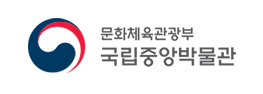
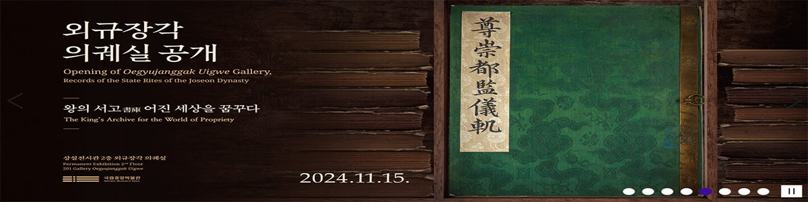
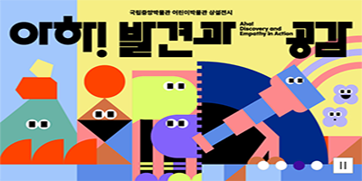
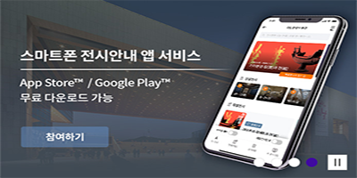

관람 정보
전시
교육
문화행사

공지사항
2025 국립중앙박물관 자원봉사자(전시해설, ...
2025.04.21
상설전시관 분청사기·백자실(304·305호)임 ...
2025.04.18
세계문화관 중국실(309호) 및 일본실(310호)...
2025.04.17
국립중앙박물관 뮤지엄 아카데미(분야별 과 ...
2025.04.15
2025년 예비 자원봉사자 합격자 공고
2025.04.11
2025 국립중앙박물관 예비자원봉사자(전시 ...
2025.04.04

